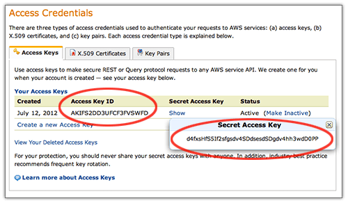

- Multithreaded
- Linux and OS X support
- Made with love
clarc is a free *nix commandline utility that synchronizes local file system folder to Amazon S3. Only files that were changed/added since last clarc invocation are uploaded.
clarc keeps track of changes by storing file metadata in a small local database. It possible to quickly rebuild the database from Amazon S3.
Quick start
clarc --upload \
--accessKeyId UKIOIZZADUGFFDD7SFVF \
--secretAccessKey sDFGsvSVsd5S47hbBFfGfa634CbAs0Q4V547bGGa \
--source /home/egor/Music/ \
--bucket music.egorfine.comThis will upload all local files from /home/egor/Music to Amazon S3 bucket music.egorfine.com. clarc will create a database file /home/egor/Music/.files.sqlite3.
Subsequent invocations of the same command line will scan /home/egor/Music and compare the file system metadata with the one stored in database. Only changes will be uploaded to S3.
Downloads
Source code is available at Github.
I'd suggest you don't bother with all Linux/OS X depencies and use the binaries I provide. Don't forget to chmod +x them.
Manual
Local meta database
clarc uses local sqlite database to store files metadata. On subsequent invocations with the same path clarc will compare actual filesystem state with the database previously stored and only upload changed files. Database is stored in the same source folder in file named .files.sqlite3.
However this database is by no mean vital. It can be quickly rebuilt from scratch with --rebuild command, like this:
clarc --rebuild \
--accessKeyId UKIOIZZADUGFFDD7SFVF \
--secretAccessKey sDFGsvSVsd5S47hbBFfGfa634CbAs0Q4V547bGGa \
--source /home/egor/Music/ \
--bucket music.egorfine.com
--upload command instructs clarc to actually upload local folder to S3. You can combine both options. In this case the rebuild is done first, then files are uploaded:
clarc --rebuild --upload \
--accessKeyId UKIOIZZADUGFFDD7SFVF \
--secretAccessKey sDFGsvSVsd5S47hbBFfGfa634CbAs0Q4V547bGGa \
--source /home/egor/Music/ \
--bucket music.egorfine.comRetransmit algorythm and consistency issues
clarc does it's best to upload the file even in case the upload fails. In case of recoverable HTTP/Network error clarc will retry up to 3 to retransmit a file increasingly sleeping between tries. clarc gives up only in case all three attempts fail. The connect timeout is 15 seconds, transmission timeout is 10 seconds and clarc uses up to 50 threads to read/upload files.
The file is updated in local meta database only after it is successfully uploaded and Amazon S3 returned MD5 checksum (which is also stored, of course).
Command-line options
.files.sqlite3.
* means the option is mandatory.
FAQ
- Access Key ID? Secret access key? What are those?
- It's the way Amazon S3 authenticates it's users. Go Security Credentials page, scroll down to Access Credentials and find your keys here:

Oh yes and you have to have an account with Amazon AWS, did I forgot to tell? - Okay, I understand this tool uploads files, but what about downloads?
- Downloads are yet to be implemented but please note: a) clarc stores files on Amazon S3 as-is. You can download them with any currently available downloader. b) clarc stores all file metadata, so in the future it will be able to download files and restore their state (uid, gid, permissions, etc).
- How secure are my files?
- As secure as Amazon S3 storage is. Client-side encryption is planned.
- What if I loose the database file?
- No worries: use
--rebuildcommand to recover. - Which files are not uploaded?
-
- Files over 5Gb (due to Amazon limitations);
- Symlinks (although feature planned);
- Device files;
- Empty directories;
- I have downloaded the binary file and it says Permission denied
chmod +xit.- I have downloaded the binary but nothing happens when I click on it
- It's a command-line application. You won't be able to use it.
- I cannot build it on a 32bit architecture
- I tried, too and it failed somewhere in libcurl headers. I don't think it is entirely impossible but I have close to zero interest in trying. If you manage to make a 32bit build on a 64bit arch host - please let me know how, I will for sure add your knowledge to my build instructions.
- C++ sucks
- In fact the tool is written in C. I only use C++
classas a syntax sugar. Yes it could all be done in plain C but this would be ugly. - What about Windows?
- What about Windows?
- What license is clarc available under?
- MIT. See
LICENSEin source code. - What does "clarc" stands for?
- CLoud ARChiver. Or Command-Line ARChiver. Or both.
Build
Build on Linux
clarc is using Grand Central Dispatch and C Blocks to use all available CPU cores, network bandwidth and disk speed. In order to build clarc on Linux you will need the clang C/C++ compiler and the following libraries installed:
- libdispatch
- libcurl with SSL support
- libxml2
On a modern Linux distribution this is all available out of the box. For instance, on Ubuntu 12 do:
sudo apt-get install libblocksruntime-dev libdispatch clang
Then simply make.
Build on OS X
OS X has GCD and clang available by default, but you must have Xcode (or Xcode command-line tools) installed.
First, you have to download the latest SQLite source code (pick the second link, the tar.gz). Unpack it, then run:
./configure --enable-threadsafe
makeAfter it's done, copy .libs/sqlite.a into clarc/ source code folder.
Then simply make.
TODO
Client-side encryption
As much as I trust Amazon I don't trust myself securely storing keys and someone else stealing my data. Therefor clarc must (optionally of course) encrypt files before they are uploaded to Amazon S3.
Delete obsoleted files from S3
This feature is dangerous and absolutely not as simple as it looks. Before I begin implementing it I have to make sure the core of the application works good enough so that it properly generates and propagates error codes thru the code.
When the upload finishes with no errors and all files were uploaded correctly I can rescan the file system and
issue multiple DELETE command on the S3 bucket to delete files that don't exists anymore locally. This will only
be done if additional option is specified on the commandline (--delete).
Script (config files)
Essentially this is just command line parsing from file instead of the command line. So instead of calling clarc --source ... you will invoce clarc ./backup.ini or something.
Exclude and include patterns
No you don't need to upload the whole .git/ folder or .DS_Store in every place to the S3 bucket.
There will be two commands, --exclude and --include that will accept multiple regexps.
Check UID, GID and mode changes
Right now file and metadata is not updated on Amazon S3 if this is the only thing that changed.
Restore
Only one direction is implemented now: uploads from local folder to S3. Surely the other way is also required: download of the remote files into local folder. While it is possible to use other tools to download files (plenty are available), none of them recovers the metadata (UID, GID, permissions, etc). clarc should be able to restore folder as it was.
NOTE: clarc DOES store metadata information with Amazon, so you can safely use it for backups right now. Once the download feature will be implemented, clarc will be able to download and restore already made backups.